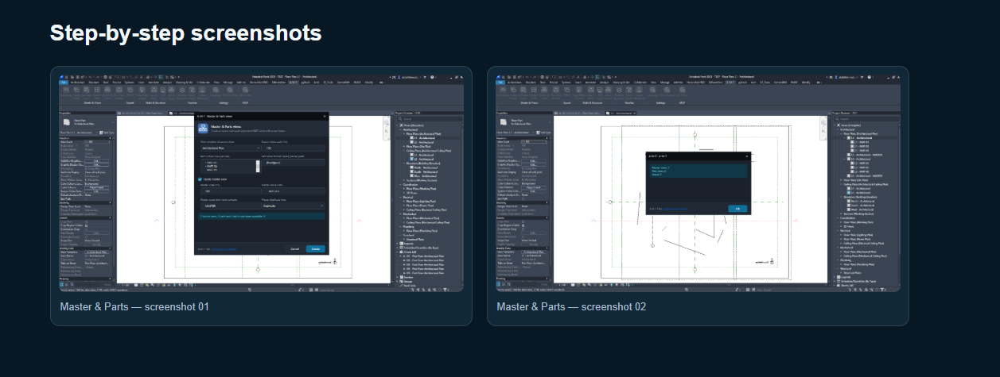
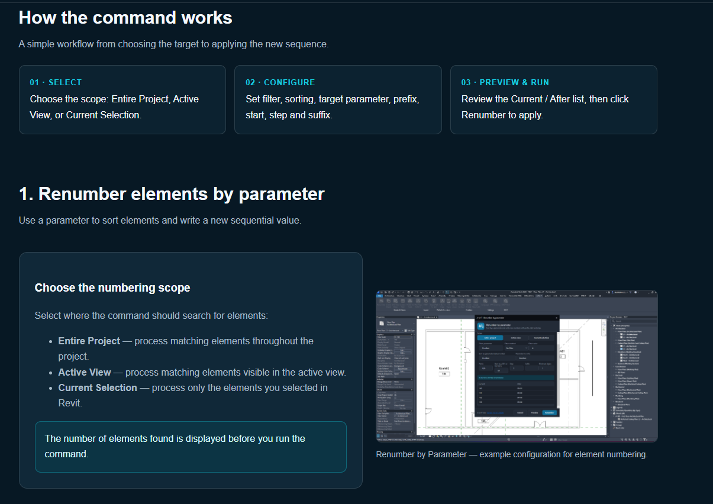

01 · SELECT
Filter source plans
Choose a source view template and the scale to process.
Create an overall master floor plan and coordinated PART views from eligible source floor plans.
Floor Plan ViewsScope BoxesVisual WalkthroughChoose the source floor plans by template and scale, define the PART labels and naming format, then optionally create a master view before reviewing the generated views.
Choose a source view template and the scale to process.
Enter one PART suffix per line and set the generated view-name format.
Configure the optional master view, run Create, and check the result report.
Open Master & Parts from the A-M-T ribbon. The dialog combines source filtering, part naming, and optional master-view settings.
{level}, {name}, and {part}; the example format is {level}{part}.
Enable Create master view when you want an overall master view to be generated alongside the PART views. The remaining controls configure that master view.
- MASTER.MASTER.After checking the source filter, PART suffixes, name format, and optional master settings, click Create.
The example run reports:
In the Project Browser, the example shows three PART views and one master view under each of two source levels: L1 and L2.

Follow the command demonstration inside Autodesk Revit.